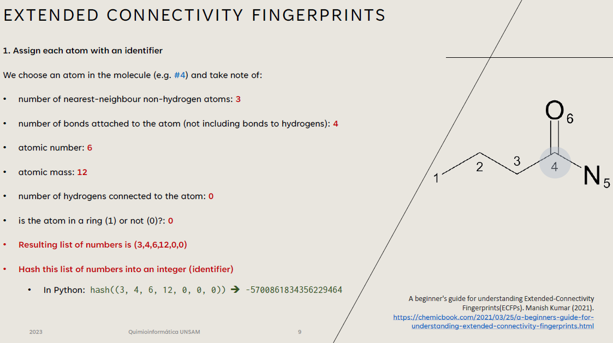

Teorica Dos
Fingerprints + Propiedades + Ontologias

Slides
Pyton Notebooks
Material de lectura y consulta
 O'Boyle NM, Banck M, James CA, Morley C, Vandermeersch T, Hutchison GR. Open Babel: An open chemical toolbox. J Cheminform. 2011 Oct 7;3:33. DOI:10.1186/1758-2946-3-33. PMID:21982300.
O'Boyle NM, Banck M, James CA, Morley C, Vandermeersch T, Hutchison GR. Open Babel: An open chemical toolbox. J Cheminform. 2011 Oct 7;3:33. DOI:10.1186/1758-2946-3-33. PMID:21982300.-
A beginner's guide for understanding Extended-Connectivity Fingerprints(ECFPs). Manish Kumar (2021).
-
Hu Y, Stumpfe D, Bajorath J. Recent Advances in Scaffold Hopping. J Med Chem. 2017 Feb 23;60(4):1238-1246. DOI:10.1021/acs.jmedchem.6b01437. Epub 2016 Dec 21. PMID:28001064.
- Mitternacht S. FreeSASA: An open source C library for solvent accessible surface area calculations. F1000Res. 2016 Feb 18;5:189. DOI:10.12688/f1000research.7931.1. PMID:26973785.
- Bolcato G, Heid E, Boström J. On the Value of Using 3D Shape and Electrostatic Similarities in Deep Generative Methods. J Chem Inf Model. 2022 Mar 28;62(6):1388-1398. DOI:10.1021/acs.jcim.1c01535. Epub 2022 Mar 10. PMID:35271260.
- Ertl P, Rohde B, Selzer P. Fast calculation of molecular polar surface area as a sum of fragment-based contributions and its application to the prediction of drug transport properties. J Med Chem. 2000 Oct 5;43(20):3714-7. DOI:10.1021/jm000942e. PMID:11020286.
- ChEBI User Guide